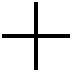

Each edition should be conceptually developed around an initial inspiration, starting with an object for the first issue, an image for the second, then closing up with a word-inspired issue. The object chosen was a pair of glasses (which is why the same pair is present in every cover) and they were the starting point for the magazine's statement: each edition should be based on a different country and show that place from an inside point of view, providing a fresh and exciting cultural scene to the readers. Different contexts, different references, new perspectives, other points of view.
My main goal when I started creating it was letting the content dictate the visuals in each article. I wanted to explore as much possibilites and techniques as I could — colors, cuts, textures. For that to work I had to come up with a solid, consistent and mutable visual guideline that allowed me to create a singular universe for each singer, photographer or designer. Special thanks to Antonio Rodrigues Jr and my friend Karan Singh for kindly sending me their artwork to be featured.
Resident Magazine

Resident Magazine was a publication created for an Editorial class at Parsons. Three different editions were developed in the process.